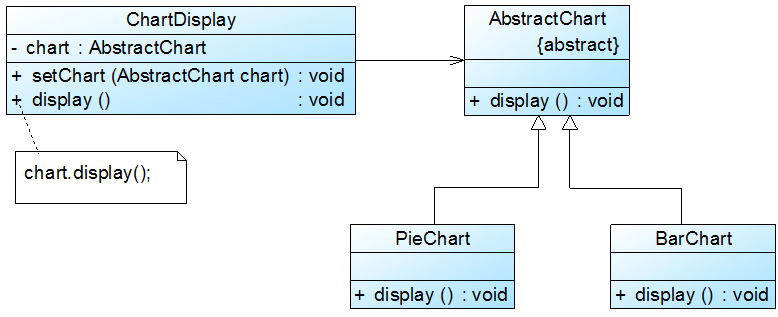

设计原则
一、概述
对于面向对象软件系统的设计而言，在支持可维护性的同时，提高系统的可复用性是一个至关重要的问题，可维护性的复用是以设计原则为基础的。每一个原则都蕴含一些面向对象设计的思想，可以从不同的角度提升一个软件结构的设计水平。
面向对象设计原则为支持可维护性复用而诞生，这些原则蕴含在很多设计模式中，它们是从许多设计方案中总结出的指导性原则 。
最常见的7种面向对象设计原则：
| 设计原则名称 | 定 义 | 使用频率 |
|---|---|---|
| 单一职责原则(Single Responsibility Principle, SRP) | 一个类只负责一个功能领域中的相应职责 | ★★★★☆ |
| 开闭原则(Open-Closed Principle, OCP) | 软件实体应对扩展开放，而对修改关闭 | ★★★★★ |
| 里氏代换原则(Liskov Substitution Principle, LSP) | 所有引用基类对象的地方能够透明地使用其子类的对象 | ★★★★★ |
| 依赖倒转原则(Dependence Inversion Principle, DIP) | 抽象不应该依赖于细节，细节应该依赖于抽象 | ★★★★★ |
| 接口隔离原则(Interface Segregation Principle, ISP) | 使用多个专门的接口，而不使用单一的总接口 | ★★☆☆☆ |
| 合成复用原则(Composite Reuse Principle, CRP) | 尽量使用对象组合，而不是继承来达到复用的目的 | ★★★★☆ |
| 迪米特法则(Law of Demeter, LoD) | 一个软件实体应当尽可能少地与其他实体发生相互作用 | ★★★☆☆ |
二、单一职责原则
核心
一个类只负责一个功能领域中的相应职责，或者可以定义为：就一个类而言，应该只有一个引起它变化的原因。
单一职责原则告诉我们：一个类不能太“累”，在软件系统中，一个类（大到模块，小到方法）承担的职责越多，它被复用的可能性就越小，而且一个类承担的职责过多，就相当于将这些职责耦合在一起，当其中一个职责变化时，可能会影响其他职责的运作，因此要将这些职责进行分离，将不同的职责封装在不同的类中，即将不同的变化原因封装在不同的类中，如果多个职责总是同时发生改变则可将它们封装在同一类中。
单一职责原则是实现 高内聚、低耦合 的指导方针，它是最简单但又最难运用的原则，需要设计人员发现类的不同职责并将其分离，而发现类的多重职责需要设计人员具有较强的分析设计能力和相关实践经验。
Demo
问题
Sunny软件公司开发人员针对某CRM（CustomerRelationship Management，客户关系管理）系统中客户信息图形统计模块提出了如图所示初始设计方案： 初始设计方案结构图 在图中，CustomerDataChart类中的方法说明如下：getConnection()方法用于连接数据库，findCustomers()用于查询所有的客户信息，createChart()用于创建图表，displayChart()用于显示图表。现使用单一职责原则对其进行重构。

改造
在上图中，CustomerDataChart类承担了太多的职责，既包含与数据库相关的方法，又包含与图表生成和显示相关的方法。如果在其他类中也需要连接数据库或者使用findCustomers()方法查询客户信息，则难以实现代码的重用。无论是修改数据库连接方式还是修改图表显示方式都需要修改该类，它不止一个引起它变化的原因，违背了单一职责原则。因此需要对该类进行拆分，使其满足单一职责原则，类CustomerDataChart可拆分为如下三个类：
DBUtil：负责连接数据库，包含数据库连接方法getConnection()；
CustomerDAO：负责操作数据库中的Customer表，包含对Customer表的增删改查等方法，如findCustomers()；
CustomerDataChart：负责图表的生成和显示，包含方法createChart()和displayChart()。

三、开闭原则
核心
一个软件实体应当对扩展开放，对修改关闭。即软件实体应尽量在不修改原有代码的情况下进行扩展。
在开闭原则的定义中，软件实体可以指一个软件模块、一个由多个类组成的局部结构或一个独立的类 。
任何软件都需要面临一个很重要的问题，即它们的需求会随时间的推移而发生变化。当软件系统需要面对新的需求时，我们应该尽量保证系统的设计框架是稳定的。如果一个软件设计符合开闭原则，那么可以非常方便地对系统进行扩展，而且在扩展时无须修改现有代码，使得软件系统在拥有适应性和灵活性的同时具备较好的稳定性和延续性。随着软件规模越来越大，软件寿命越来越长，软件维护成本越来越高，设计满足开闭原则的软件系统也变得越来越重要。
为了满足开闭原则，需要对系统进行抽象化设计， 抽象化是开闭原则的关键 。在Java、C#等编程语言中，可以为系统定义一个相对稳定的抽象层，而将不同的实现行为移至具体的实现层中完成。在很多面向对象编程语言中都提供了接口、抽象类等机制，可以通过它们定义系统的抽象层，再通过具体类来进行扩展。如果需要修改系统的行为，无须对抽象层进行任何改动，只需要增加新的具体类来实现新的业务功能即可，实现在不修改已有代码的基础上扩展系统的功能，达到开闭原则的要求。
Demo
问题
Sunny软件公司开发的CRM系统可以显示各种类型的图表，如饼状图和柱状图等，为了支持多种图表显示方式，原始设计方案如图所示： 初始设计方案结构图 在ChartDisplay类的display()方法中存在如下代码片段：......if(type.equals("pie")){PieChartchart=newPieChart();chart.display();}elseif(type.equals("bar")){BarChartchart=newBarChart();chart.display();}...... 在该代码中，如果需要增加一个新的图表类，如折线图LineChart，则需要修改ChartDisplay类的display()方法的源代码，增加新的判断逻辑，违反了开闭原则。 现对该系统进行重构，使之符合开闭原则。

1// 在ChartDisplay类的display()方法中存在如下代码片段：2......3if (type.equals("pie")) {4PieChart chart = new PieChart();5chart.display();6}7else if (type.equals("bar")) {8BarChart chart = new BarChart();9chart.display();10}11......改造
在本实例中，由于在ChartDisplay类的display()方法中针对每一个图表类编程，因此增加新的图表类不得不修改源代码。可以通过抽象化的方式对系统进行重构，使之增加新的图表类时无须修改源代码，满足开闭原则。具体做法如下：
增加一个抽象图表类AbstractChart，将各种具体图表类作为其子类；
ChartDisplay类针对抽象图表类进行编程，由客户端来决定使用哪种具体图表。

在图2中，我们引入了抽象图表类AbstractChart，且ChartDisplay针对抽象图表类进行编程，并通过setChart()方法由客户端来设置实例化的具体图表对象，在ChartDisplay的display()方法中调用chart对象的display()方法显示图表。如果需要增加一种新的图表，如折线图LineChart，只需要将LineChart也作为AbstractChart的子类，在客户端向ChartDisplay中注入一个LineChart对象即可，无须修改现有类库的源代码。
注意：因为xml和properties等格式的配置文件是纯文本文件，可以直接通过VI编辑器或记事本进行编辑，且无须编译，因此在软件开发中，一般不把对配置文件的修改认为是对系统源代码的修改。如果一个系统在扩展时只涉及到修改配置文件，而原有的Java代码或C#代码没有做任何修改，该系统即可认为是一个符合开闭原则的系统。
四、里氏代换原则
核心
所有引用基类（父类）的地方必须能透明地使用其子类的对象。
里氏代换原则告诉我们，在软件中将一个基类对象替换成它的子类对象，程序将不会产生任何错误和异常，反过来则不成立，如果一个软件实体使用的是一个子类对象的话，那么它不一定能够使用基类对象。例如：我喜欢动物，那我一定喜欢狗，因为狗是动物的子类；但是我喜欢狗，不能据此断定我喜欢动物，因为我并不喜欢老鼠，虽然它也是动物。
例如有两个类，一个类为BaseClass，另一个BaseClass的子类SubClass类，BaseClass的method1(base)可以接受的话，那么必然可以接收SubClass调用的method1(sub)。反过来的代换不成立，SubClass独有的method2方法可以接受，那么就BaseClass就不一定能够掉nethod2。简单来说，父亲的东西就是儿子的，儿子的东西不一定是父亲的。
在程序中尽量使用基类类型来对对象进行定义，而在运行时再确定其子类类型，用子类对象来替换父类对象 。
在使用里氏代换原则时需要注意几个问题：
子类的所有方法必须在父类中声明，或子类必须实现父类中声明的所有方法。根据里氏代换原则，为了保证系统的扩展性，在程序中通常使用父类来进行定义，如果一个方法只存在子类中，在父类中不提供相应的声明，则无法在以父类定义的对象中使用该方法。
尽量把父类设计为抽象类或者接口，让子类继承父类或实现父接口，并实现在父类中声明的方法，运行时，子类实例替换父类实例，我们可以很方便地扩展系统的功能，同时无须修改原有子类的代码，增加新的功能可以通过增加一个新的子类来实现。里氏代换原则是开闭原则的具体实现手段之一。
Java语言中，在编译阶段，Java编译器会检查一个程序是否符合里氏代换原则，这是一个与实现无关的、纯语法意义上的检查，但Java编译器的检查是有局限的。
Demo
问题
在Sunny软件公司开发的CRM系统中，客户(Customer)可以分为VIP客户(VIPCustomer)和普通客户(CommonCustomer)两类，系统需要提供一个发送Email的功能，原始设计方案如图所示：在对系统进行进一步分析后发现，无论是普通客户还是VIP客户，发送邮件的过程都是相同的，也就是说两个send()方法中的代码重复，而且在本系统中还将增加新类型的客户。为了让系统具有更好的扩展性，同时减少代码重复，使用里氏代换原则对其进行重构。

改造
在本实例中，可以考虑增加一个新的抽象客户类Customer，而将CommonCustomer和VIPCustomer类作为其子类，邮件发送类EmailSender类针对抽象客户类Customer编程，根据里氏代换原则，能够接受基类对象的地方必然能够接受子类对象，因此将EmailSender中的send()方法的参数类型改为Customer，如果需要增加新类型的客户，只需将其作为Customer类的子类即可。重构后的结构如图所示：

五、依赖倒转原则
核心
抽象不应该依赖于细节，细节应当依赖于抽象。换言之，要针对接口编程，而不是针对实现编程。
依赖倒转原则要求我们在程序代码中传递参数时或在关联关系中，尽量引用层次高的抽象层类，即使用接口和抽象类进行变量类型声明、参数类型声明、方法返回类型声明，以及数据类型的转换等，而不要用具体类来做这些事情。为了确保该原则的应用，一个具体类应当只实现接口或抽象类中声明过的方法，而不要给出多余的方法，否则将无法调用到在子类中增加的新方法。
在引入抽象层后，系统将具有很好的灵活性，在程序中尽量使用抽象层进行编程，而将具体类写在配置文件中，这样一来，如果系统行为发生变化，只需要对抽象层进行扩展，并修改配置文件，而无须修改原有系统的源代码，在不修改的情况下来扩展系统的功能，满足开闭原则的要求。
在实现依赖倒转原则时，我们需要针对抽象层编程，而将具体类的对象通过依赖注入(DependencyInjection, DI)的方式注入到其他对象中， 依赖注入是指当一个对象要与其他对象发生依赖关系时，通过抽象来注入所依赖的对象 。常用的注入方式有三种，分别是：构造注入，设值注入（Setter注入）和接口注入。构造注入是指通过构造函数来传入具体类的对象，设值注入是指通过Setter方法来传入具体类的对象，而接口注入是指通过在接口中声明的业务方法来传入具体类的对象。这些方法在定义时使用的是抽象类型，在运行时再传入具体类型的对象，由子类对象来覆盖父类对象。
Demo
问题
Sunny软件公司开发人员在开发某CRM系统时发现：该系统经常需要将存储在TXT或Excel文件中的客户信息转存到数据库中，因此需要进行数据格式转换。在客户数据操作类中将调用数据格式转换类的方法实现格式转换和数据库插入操作，初始设计方案结构如图所示： 初始设计方案结构图，在编码实现结构时发现一个非常严重的问题，由于每次转换数据时数据来源不一定相同，因此需要更换数据转换类，如有时候需要将TXTDataConvertor改为ExcelDataConvertor，此时，需要修改CustomerDAO的源代码，而且在引入并使用新的数据转换类时也不得不修改CustomerDAO的源代码，系统扩展性较差，违反了开闭原则，现需要对该方案进行重构。

改造
在本实例中，由于CustomerDAO针对具体数据转换类编程，因此在增加新的数据转换类或者更换数据转换类时都不得不修改CustomerDAO的源代码。我们可以通过引入抽象数据转换类解决该问题，在引入抽象数据转换类DataConvertor之后，CustomerDAO针对抽象类DataConvertor编程，而将具体数据转换类名存储在配置文件中，符合依赖倒转原则。根据里氏代换原则，程序运行时，具体数据转换类对象将替换DataConvertor类型的对象，程序不会出现任何问题。更换具体数据转换类时无须修改源代码，只需要修改配置文件；如果需要增加新的具体数据转换类，只要将新增数据转换类作为DataConvertor的子类并修改配置文件即可，原有代码无须做任何修改，满足开闭原则。重构后的结构如图所示：

六、接口隔离原则
核心
使用多个专门的接口，而不使用单一的总接口，即客户端不应该依赖那些它不需要的接口。
根据接口隔离原则，当一个接口太大时，我们需要将它分割成一些更细小的接口，使用该接口的客户端仅需知道与之相关的方法即可。 每一个接口应该承担一种相对独立的角色，不干不该干的事，该干的事都要干。 这里的“接口”往往有两种不同的含义：一种是指一个类型所具有的方法特征的集合，仅仅是一种逻辑上的抽象；另外一种是指某种语言具体的“接口”定义，有严格的定义和结构，比如Java语言中的interface。对于这两种不同的含义，ISP的表达方式以及含义都有所不同：
当把“接口”理解成一个类型所提供的所有方法特征的集合的时候，这就是一种逻辑上的概念，接口的划分将直接带来类型的划分。可以把接口理解成角色，一个接口只能代表一个角色，每个角色都有它特定的一个接口，此时，这个原则可以叫做“ 角色隔离原则 ”。
如果把“接口”理解成狭义的特定语言的接口，那么ISP表达的意思是指接口仅仅提供客户端需要的行为，客户端不需要的行为则隐藏起来，应当为客户端提供尽可能小的单独的接口，而不要提供大的总接口 。在面向对象编程语言中，实现一个接口就需要实现该接口中定义的所有方法，因此大的总接口使用起来不一定很方便，为了使接口的职责单一，需要将大接口中的方法根据其职责不同分别放在不同的小接口中，以确保每个接口使用起来都较为方便，并都承担某一单一角色。接口应该尽量细化，同时接口中的方法应该尽量少，每个接口中只包含一个客户端（如子模块或业务逻辑类）所需的方法即可，这种机制也称为“ 定制服务 ”，即为不同的客户端提供宽窄不同的接口。
Demo
问题
Sunny软件公司开发人员针对某CRM系统的客户数据显示模块设计了如图所示接口，其中方法dataRead()用于从文件中读取数据，方法transformToXML()用于将数据转换成XML格式，方法createChart()用于创建图表，方法displayChart()用于显示图表，方法createReport()用于创建文字报表，方法displayReport()用于显示文字报表。 图初始设计方案结构图 在实际使用过程中发现该接口很不灵活，例如如果一个具体的数据显示类无须进行数据转换（源文件本身就是XML格式），但由于实现了该接口，将不得不实现其中声明的transformToXML()方法（至少需要提供一个空实现）；如果需要创建和显示图表，除了需实现与图表相关的方法外，还需要实现创建和显示文字报表的方法，否则程序编译时将报错。 现使用接口隔离原则对其进行重构。

改造
在上图中，由于在接口CustomerDataDisplay中定义了太多方法，即该接口承担了太多职责，一方面导致该接口的实现类很庞大，在不同的实现类中都不得不实现接口中定义的所有方法，灵活性较差，如果出现大量的空方法，将导致系统中产生大量的无用代码，影响代码质量；另一方面由于客户端针对大接口编程，将在一定程序上破坏程序的封装性，客户端看到了不应该看到的方法，没有为客户端定制接口。因此需要将该接口按照接口隔离原则和单一职责原则进行重构，将其中的一些方法封装在不同的小接口中，确保每一个接口使用起来都较为方便，并都承担某一单一角色，每个接口中只包含一个客户端（如模块或类）所需的方法即可。

七、合成复用原则
核心
尽量使用对象组合，而不是继承来达到复用的目的。
合成复用原则就是在一个新的对象里通过关联关系（包括组合关系和聚合关系）来使用一些已有的对象，使之成为新对象的一部分；新对象通过委派调用已有对象的方法达到复用功能的目的。简言之：复用时要尽量使用组合/聚合关系（关联关系），少用继承。
在面向对象设计中，可以通过两种方法在不同的环境中复用已有的设计和实现，即通过组合/聚合关系或通过继承，但首先应该考虑使用组合/聚合，组合/聚合可以使系统更加灵活，降低类与类之间的耦合度，一个类的变化对其他类造成的影响相对较少；其次才考虑继承，在使用继承时，需要严格遵循里氏代换原则，有效使用继承会有助于对问题的理解，降低复杂度，而滥用继承反而会增加系统构建和维护的难度以及系统的复杂度，因此需要慎重使用继承复用。
通过继承来进行复用的主要问题在于继承复用会破坏系统的封装性，因为继承会将基类的实现细节暴露给子类，由于基类的内部细节通常对子类来说是可见的，所以这种复用又称“白箱”复用，如果基类发生改变，那么子类的实现也不得不发生改变；从基类继承而来的实现是静态的，不可能在运行时发生改变，没有足够的灵活性；而且继承只能在有限的环境中使用（如类没有声明为不能被继承）。
由于组合或聚合关系可以将已有的对象（也可称为成员对象）纳入到新对象中，使之成为新对象的一部分，因此新对象可以调用已有对象的功能，这样做可以使得成员对象的内部实现细节对于新对象不可见，所以这种复用又称为“黑箱”复用，相对继承关系而言，其耦合度相对较低，成员对象的变化对新对象的影响不大，可以在新对象中根据实际需要有选择性地调用成员对象的操作；合成复用可以在运行时动态进行，新对象可以动态地引用与成员对象类型相同的其他对象。
一般而言，如果两个类之间是“Has-A”的关系应使用组合或聚合，如果是“Is-A”关系可使用继承。"Is-A"是严格的分类学意义上的定义，意思是一个类是另一个类的"一种"；而"Has-A"则不同，它表示某一个角色具有某一项责任。
Demo
问题
Sunny软件公司开发人员在初期的CRM系统设计中，考虑到客户数量不多，系统采用MySQL作为数据库，与数据库操作有关的类如CustomerDAO类等都需要连接数据库，连接数据库的方法getConnection()封装在DBUtil类中，由于需要重用DBUtil类的getConnection()方法，设计人员将CustomerDAO作为DBUtil类的子类，初始设计方案结构如图1所示： 图1 初始设计方案结构图 随着客户数量的增加，系统决定升级为Oracle数据库，因此需要增加一个新的OracleDBUtil类来连接Oracle数据库，由于在初始设计方案中CustomerDAO和DBUtil之间是继承关系，因此在更换数据库连接方式时需要修改CustomerDAO类的源代码，将CustomerDAO作为OracleDBUtil的子类，这将违反开闭原则。【当然也可以修改DBUtil类的源代码，同样会违反开闭原则。】 现使用合成复用原则对其进行重构。

改造
根据合成复用原则，我们在实现复用时应该多用关联，少用继承。因此在本实例中我们可以使用关联复用来取代继承复用，重构后的结构如图所示：

CustomerDAO和DBUtil之间的关系由继承关系变为关联关系，采用依赖注入的方式将DBUtil对象注入到CustomerDAO中，可以使用构造注入，也可以使用Setter注入。如果需要对DBUtil的功能进行扩展，可以通过其子类来实现，如通过子类OracleDBUtil来连接Oracle数据库。由于CustomerDAO针对DBUtil编程，根据里氏代换原则，DBUtil子类的对象可以覆盖DBUtil对象，只需在CustomerDAO中注入子类对象即可使用子类所扩展的方法。例如在CustomerDAO中注入OracleDBUtil对象，即可实现Oracle数据库连接，原有代码无须进行修改，而且还可以很灵活地增加新的数据库连接方式。
八、迪米特法则
核心
一个软件实体应当尽可能少地与其他实体发生相互作用。
如果一个系统符合迪米特法则，那么当其中某一个模块发生修改时，就会尽量少地影响其他模块，扩展会相对容易，这是对软件实体之间通信的限制，迪米特法则要求限制软件实体之间通信的宽度和深度。 迪米特法则可降低系统的耦合度，使类与类之间保持松散的耦合关系。
迪米特法则还有几种定义形式，包括 ： 不要和“陌生人”说话 、 只与你的直接朋友通信等，在迪米特法则中，对于一个对象，其朋友包括以下几类：
当前对象本身(this)；
以参数形式传入到当前对象方法中的对象；
当前对象的成员对象；
如果当前对象的成员对象是一个集合，那么集合中的元素也都是朋友；
当前对象所创建的对象。
任何一个对象，如果满足上面的条件之一，就是当前对象的“朋友”，否则就是“陌生人”。在应用迪米特法则时，一个对象只能与直接朋友发生交互，不要与“陌生人”发生直接交互，这样做可以降低系统的耦合度，一个对象的改变不会给太多其他对象带来影响。
迪米特法则要求我们在设计系统时， 应该尽量减少对象之间的交互，如果两个对象之间不必彼此直接通信，那么这两个对象就不应当发生任何直接的相互作用，如果其中的一个对象需要调用另一个对象的某一个方法的话，可以通过第三者转发这个调用 。简言之，就是通过引入一个合理的第三者来降低现有对象之间的耦合度 。
在将迪米特法则运用到系统设计中时，要注意下面的几点：在类的划分上，应当尽量创建松耦合的类，类之间的耦合度越低，就越有利于复用，一个处在松耦合中的类一旦被修改，不会对关联的类造成太大波及 ； 在类的结构设计上，每一个类都应当尽量降低其成员变量和成员函数的访问权限 ； 在类的设计上，只要有可能，一个类型应当设计成不变类 ； 在对其他类的引用上，一个对象对其他对象的引用应当降到最低 。
Demo
问题
Sunny软件公司所开发CRM系统包含很多业务操作窗口，在这些窗口中，某些界面控件之间存在复杂的交互关系，一个控件事件的触发将导致多个其他界面控件产生响应，例如，当一个按钮(Button)被单击时，对应的列表框(List)、组合框(ComboBox)、文本框(TextBox)、文本标签(Label)等都将发生改变，在初始设计方案中，界面控件之间的交互关系可简化为如图1所示结构： 图初始设计方案结构图 在图中，由于界面控件之间的交互关系复杂，导致在该窗口中增加新的界面控件时需要修改与之交互的其他控件的源代码，系统扩展性较差，也不便于增加和删除新控件。 现使用迪米特对其进行重构。

改造
在本实例中，可以通过引入一个专门用于控制界面控件交互的中间类(Mediator)来降低界面控件之间的耦合度。引入中间类之后，界面控件之间不再发生直接引用，而是将请求先转发给中间类，再由中间类来完成对其他控件的调用。当需要增加或删除新的控件时，只需修改中间类即可，无须修改新增控件或已有控件的源代码，重构后结构如图所示：